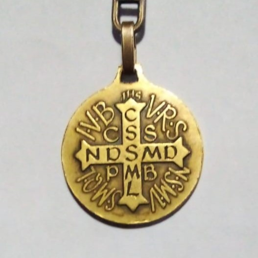
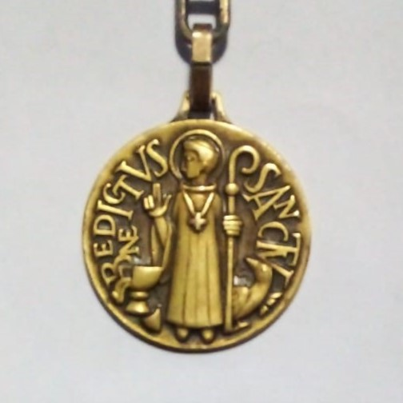

Una de las devociones más difundidas, y no solo por la influencia de los monasterios benedictinos, es la Cruz de San Benito, especialmente en forma de medalla, que es la más frecuente.
La medalla presenta por un lado, la imagen del Santo Patriarca, y por el otro, una cruz, y en ella a su alrededor, las letras iniciales de una oración, que dice así en latín y castellano.
Crux Sancti Patris Benedicti
Cruz del Santo Padre BenitoCrux Sacra Sit Mihi Lux
Mi luz sea la cruz santaNon Draco Sit Mihi Dux
No sea el demonio mi guíaVade Retro Satana
¡Apártate, Satanás!Numquam Suade Mihi Vana
No sugieras cosas vanasSunt Mala Quae Libas
Pues la maldad es lo que brindasIpse Venena Bibas
Bebe tú mismo el veneno


Como se puede apreciar por las iniciales distribuidas en la cruz, a esta, el texto de la plegaria la acompaña siempre, y a la vez es una ayuda para la recitación de la misma. El texto latino se compone después del título: Crux Sancti Patris Benedicti (C.S.P.B.) de tres dísticos, que encierran una invocación a la Santa Cruz, con el deseo suplicante de tenerla como apoyo y guía, y la expresión del rechazo a Satanás, a quien se manda que se aparte, con las palabras de Jesús, cuando fue tentado por él (Mt 4, 10), manifestando que no va a escuchar sus sugerencias, pues es malo lo que ofrece. Es una auténtica confesión de fe y de amor a Cristo, y una renuencia al diablo.
En este breve texto, la victoria sobre el demonio se atribuye a la Cruz de Jesucristo, que es luz y guía para el fiel, y que se opone al veneno y a la maldad del tentador. Por ello, el cristiano que lleva la medalla no lo hace con una preocupación supersticiosa por apartar los malos espíritus, sino consciente de que es por la presencia del Señor Jesucristo y por una vida conforme a la gracia, como habrá de mantener alejado al diablo y sus tentaciones. Donde está la gracia divina, no se puede aproximar el demonio. Pero el combate contra las asechanzas y tentaciones diabólicas no le va a faltar al fiel, pues el maligno quiere impedir su camino hacia Dios.
El origen de la medalla de San Benito no puede atribuirse con certeza al mismo santo, pero su sentido es profundamente coherente con la espiritualidad que inspiraba al Padre de los monjes de Occidente y que este supo transmitir a sus hijos. Lo que sí podemos aclarar es que el signo de la Cruz de Jesucristo fue una constante en toda su vida, la cual lo protegió de algunos peligros y por la cual también salió victorioso por el triunfo de Cristo en la Cruz.
Quienquiera, se lance resueltamente a la búsqueda de las realidades sobrenaturales, se sentirá muy pronto que en él se enfrentan Dios y el diablo. Todo compromiso por Dios conlleva, pues, la necesidad de armarse contra el ángel caído. Esto es claramente visible desde el primer compromiso cristiano, que sanciona el sacramento del Bautismo: la renuncia a Satanás va junto con el ingreso en la Iglesia.